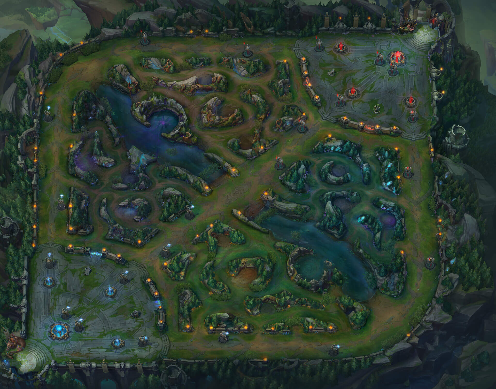

롤 기초 공략

리그 오브 레전드(이하 LOL)는 RTS(실시간 전략 시뮬레이션) 게임을 기반으로 한 AOS 장르입니다.
약 2년 전 Riot Games에서 워크래프트 인기 유즈맵인 DOTA Allstars를 기반으로 제작된 게임으로
현재 북미와 유럽, 중국, 대만 등 서구와 아시아 전역에서 선풍적인 인기를 끌고 있는 게임입니다.
소환사(유저)들은 각자 개성이 넘치는 캐릭터들을 선택하여 아군과 협력하고 적군과 맞서 싸우며
상대진영의 건물을 차근차근 부숴나가며 마지막엔 최종건물인 넥서스를 부수는 것을 목표로 합니다.
2. 게임 시스템 파악하기
(1) 맵
LOL에는 총 두 가지 형태의 맵이 존재합니다.
가장 메인이 되며 많은 유저들의 사랑을 받고 있는 맵인 소환사의 협곡
서브로 되고 사람들이 간단하게 하는 칼바람나락이 있다
이번 편에서는 소환사의 협곡에 대해서만 알아보도록 하겠습니다.

보시는 바와 같이 5:5 맵인 ‘소환사의 협곡’은 총 3개의 길(Lane)과 정글(Jungle)로 이루어져 있습니다.
각각의 챔피언(캐릭터)들은 팀원과 의견을 조율하여 원하는 라인으로 이동하여 그곳에서 레벨 업을 하고, 상대 챔피언과 전투를 벌이게 됩니다.
① 탑 라인(Top Lane)
초보 유저들에게 가장 추천 드리고 싶은 라인으로 보통 탑이라고 부릅니다. 이 라인에서는 보통 챔피언이 혼자 가게 되거나, 가끔씩 두 챔피언이 같이 가게 됩니다.
모든 라인을 통틀어 가장 전투가 없는 지역으로 게임 시작 후 약 20분전까지는 거의 동떨어져 플레이하기 때문에 우스갯소리로 그들만의 리그 혹은 왕의 귀환이라고 불리기도 합니다.
탑 라인에는 보통 중후반에 강력한 힘을 내는 챔피언들이 자리 잡게 되는데,
이유는 초반에 전투가 거의 없기 때문에 가장 안전한 상태에서 빠르게 성장할 수 있기 때문입니다.
② 미드 라인(Mid Lane)
게임에서 가장 중추적인 역할을 맡는 라인으로 보통 미드라고 불립니다.
이 라인은 단 한 명의 챔피언만이 가게 되는데, 모든 라인 중에서 가장 전투가 활발하게 이루어집니다.
미드 라인은 보통 초반이 매우 강력한 챔피언이 가게 됩니다.
요새는 대부분 마법 딜러 챔피언들이 가게 되는데, 초반에 마법 데미지가 강력하고 군중제어기가 뛰어나기 때문에 초반 싸움에서 유리한 위치를 점할 수 있기 때문입니다.
또 다른 라인들과 동선이 가까워 빠르게 지원을 갈 수도 있어 게임을 풀어나가는데 매우 중요한 역할을 하게 됩니다.
③ 봇 라인(Bot Lane)
모든 라인 중에서 가장 중요할 수도, 가장 중요하지 않을 수도 있는 라인입니다.
이 라인에는 보통 두 명의 챔피언이 함께 가게 되는데, 이유는 뒤에서 설명해드릴 ‘드래곤’ 이라는 몬스터와 가장 가까운 라인이기 때문입니다.
드래곤에 대해 간략히 소개하자면 라인 밖에 존재하는 정글형 보스 몬스터로 이를 잡게 되면 팀원 전체에게 높은 경험치와 골드를 지급하기 때문에 게임에서 중요한 역할을 맡는 몬스터입니다.
때문에 봇 라인에서는 드래곤을 먼저 가져가기 위해 두 명의 챔피언이 가게 되는 겁니다.
보통 봇의 챔피언은 원거리 딜러와 서포터로 구성됩니다.
원거리 딜러는 후반에 가장 강력한 위력을 발휘하는 포지션으로써 서포터의 도움으로 후반까지 잘 크는 것이 중요합니다.
각 라인마다 총 3개씩 설치되어 있는 건물로써 흔히들 타워(Tower)라고 부릅니다. 이 포탑은 단 하나의 대상만을 공격하지만,
초반엔 매우 강력하기 때문에 무리하게 상대 포탑 안으로 들어가서는 안 됩니다.
가장 큰 이유는 포탑은 누적 피해를 가지고 있어 공격을 허용하면 허용할수록 더욱 큰 피해를 입기 때문입니다.
포탑을 부수기 위해서는 꼭 아군 미니언들을 앞세워서 부숴야 합니다.
만약 포탑 안에 있는 상대 챔피언을 공격하게 되면 포탑은 자동적으로 처음 공격한 대상을 공격하기 때문에 만약 상대챔피언이 적은 피로 포탑 안에 있다고 하여 공격을 감행했다간 오히려 카운터를 맞고 죽을 수도 있으니 유의하셔야 합니다.
포탑을 부수게 되면 아군 전체에 일정량의 경험치와 150 골드를 지급하고, 상대 챔피언의 보호지역이 사라지기 때문에 일반적으로 가능하면 빨리 부수는 것이 좋습니다.
각 라인마다 하나씩 설치가 되어있는 건물로써 흔히들 배럭(Barrack)이라고 부릅니다. 억제기는 미니언을 관리하는 건물로써 만약 상대 억제기를 파괴하게 되면 아군 미니언에서 ‘슈퍼 미니언’ 이라고 부르는 강력한 미니언이 나와 아군을 도와주게 됩니다. 때문에 상대의 억제기를 많이 부수는 것이 승리를 위한 지름길이라고 볼 수 있습니다.
또한 억제기는 넥서스를 보호해주는 역할도 하는데, 만약 모든 포탑을 다 파괴했더라도 억제기가 전부 남아있다면 최종 건물인 넥서스를 공격할 수 없습니다.
넥서스는 ‘소환사의 협곡’ 내의 최종 목표로써 상대 혹은 아군이 이를 부수게 되면 게임에서 승리하게 됩니다.
이 건물은 미니언들을 생성하며, 강력한 포탑 두 개의 보호를 받고 있기 때문에 부수기 위해선 아군 미니언들과 함께 협동해서 공격하는 것이 좋습니다.